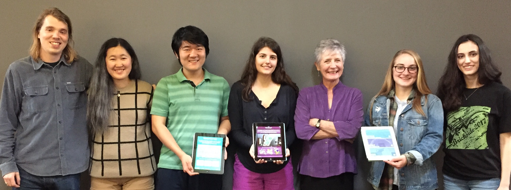

Alife App Project
Duke University, 2017
Contribuitors:
Caroline Bruzelius (Anne M. Cogan Professor of Art, Art History and Visual Studies), Lucas Giles (MA Digital Art History, Duke '17), Gabriella Salvatore ( Duke '19), Lucian Li (Duke '20), Marina Frattaroli (Duke '19), Lauren Jones (Duke '19), and Jessica Chen (Duke '20) (pictured below)
Special thanks to: Mark Olson, Edward Triplett, Victoria Szabo, Sheila Dillon and Adam Spring
Resources:
Christian Heck and Remy Cordonnier,The Grand Medieval Bestiary: Animals in Illuminated Manuscripts (New York, 2012).
David Macaulay, City: A Story of Roman Planning and Construction (Boston, 1974).
Scot McKendrick and Kathleen Doyle,The Art of the Bible: Illuminated Manuscripts from the Medieval World (London, 2016)
Luigi Cielo, La Cattedrale Normanna di Alife (Naples, 1984)
National Library of New Zealand